Erlang: Your New Favorite Scripting Language?
What’s cool about Erlang?

Ok, but what do I do with it?
Functional
f(x)
What does that even mean?
Why?
Procedural
- 1 + 2 + 3 + 4 + 5 + … + n
Why?
Procedural
- 1 + 2 + 3 + 4 + 5 + … + n
Functional
- n(n+1)/2
Where are my curly braces?!
- % comment
- atom
- ‘atom’
- but not “atom”
- Variable
- [1, 2, 3] % list
- {1, 2, 3} % tuple
- [X, Y, Z] = [1, 2, 3]
- [First, Second | Rest] = [1, 2, 3, 4]
- [First, Second | Rest] = [1, 2]
- [First, Second] = [1, 2, 3, 4](error)
- [First, Second | _ ] = [1, 2, 3, 4]
- [First, Second | _Rest ] = [1, 2, 3, 4]
my_func(Param1, ... ) ->
%% intermediate stuff
Value.
f(X) -> X * 2.
my_func(Param1) ->
my_func(Param1, "default").
my_func(Param1, Param2) ->
%% actually do stuff...
my_func([]) -> ...
my_func([Only]) -> ...
my_func([First, Second | Rest]) -> ...
my_func(0) -> ...
my_func(X) where X > 0 -> ...
my_func(X) where X < 0 -> ...
if
X >= 100 -> 100;
X >= 0 -> X;
true -> 0
end
case my_func(X) of
error -> [];
List -> List
end
Output = case file:open(Filename, [read]) of
{ok, Handle} ->
process_file(Handle);
{error, Reason} ->
log_error(Reason, Filename),
[]
end.
- Output = process_file(Handle)
- Output = []
#!/usr/bin/escript
main(_Args) ->
io:format("Hello World!~n").
#!/usr/bin/escript
main(Args) -> main("World", Args).
main(_, ["-h" | _Args]) ->
io:format("Help! Help!~n");
main(_, ["-n", Name | Args]) ->
main(Name, Args);
main(Name, []) ->
io:format("Hello, ~s!~n", [Name]).
project
action
sub-project
action
action
project
sub-project
sub-project
action
* work on presentation [computer, quiet] (2011-08-24) !!

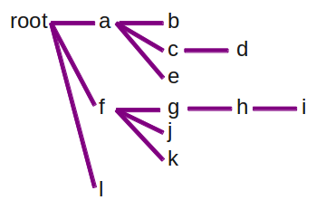

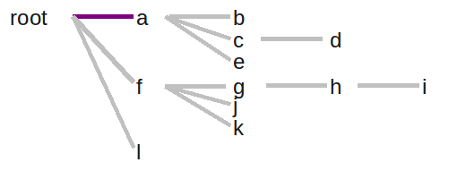
String[] process(String[] input) {
String[] output = new String[input.length];
for (int i=0; i < input.length; i++) {
output[i] = do_stuff(input[i]);
}
return output;
}
process([First|Rest], Output) ->
NewFirst = do_stuff(First),
process(Rest, [NewFirst|Output]);
Output = process(Input, []).
process([First|Rest], Output) ->
NewFirst = do_stuff(First),
process(Rest, [NewFirst|Output]);
process([], Output) ->
lists:reverse(Output).
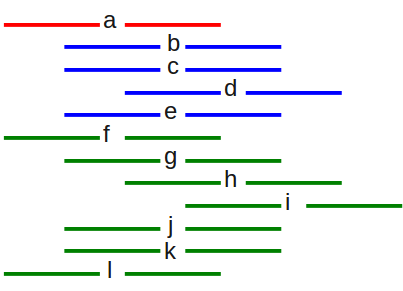
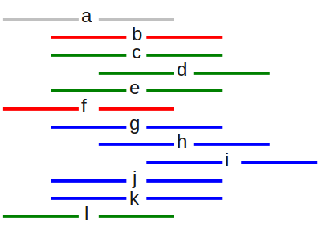
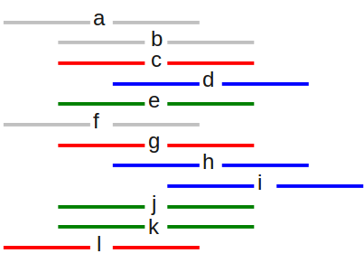
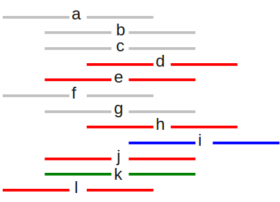
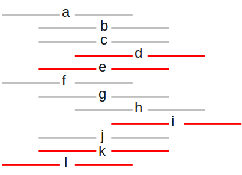
Erlang: A kinder, gentler Lisp?
build_nodes([{Content, Indent}|Rest]) ->
IsChild = fun({_C, I}) -> I > Indent end,
{ChildLines, SiblingLines} = lists:splitwith(IsChild, Rest),
Children = build_nodes(ChildLines),
Siblings = build_nodes(SiblingLines),
[{Content, Children}|Siblings];
build_nodes([]) -> [].
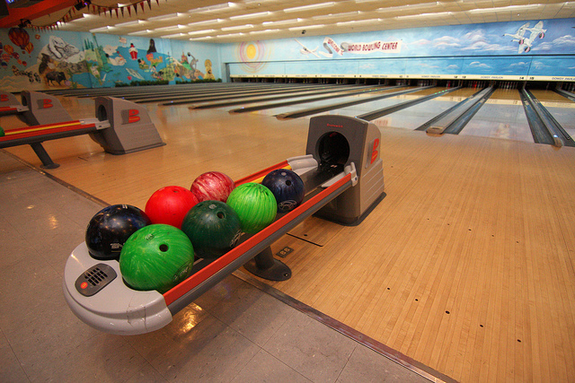
score(Rolls) -> frame(Rolls, 1, 0).
frame(_BonusRolls, 11, Score) -> Score;
frame([10|Rest], Frame, Score) ->
[Bonus1, Bonus2|_] = Rest,
frame(Rest, Frame + 1, Score + 10 + Bonus1 + Bonus2);
frame([First,Second|Rest], Frame, Score) when (First+Second==10)->
[Bonus1|_] = Rest,
frame(Rest, Frame + 1, Score + 10 + Bonus1);
frame([First,Second|Rest], Frame, Score) ->
frame(Rest, Frame + 1, Score + First + Second).
test() ->
test(0, [0,0, 0,0, 0,0, 0,0, 0,0, 0,0, 0,0, 0,0, 0,0, 0,0]),
test(20, [1,1, 1,1, 1,1, 1,1, 1,1, 1,1, 1,1, 1,1, 1,1, 1,1]),
test(150, [5,5, 5,5, 5,5, 5,5, 5,5, 5,5, 5,5, 5,5, 5,5, 5,5, 5]),
test(47, [1,1, 1,1, 1,1, 1,1, 1,1, 1,1, 1,1, 1,1, 1,1, 10, 10 ,9]),
test(173, [7,3, 7,3, 7,3, 7,3, 7,3, 7,3, 7,3, 7,3, 7,3, 7,3, 10]),
test(Expected, Rolls) ->
case score(Rolls) of
Expected -> io:fwrite("Pass~n");
Scored -> io:fwrite("Fail: expected=~p, scored=~p~n",
[Expected, Scored])
end.
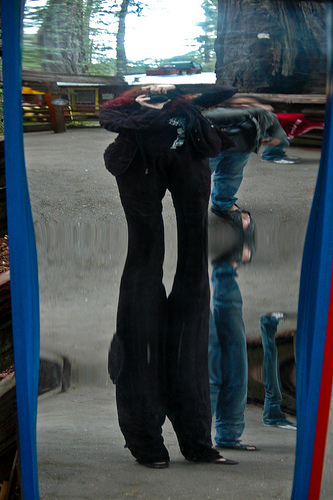

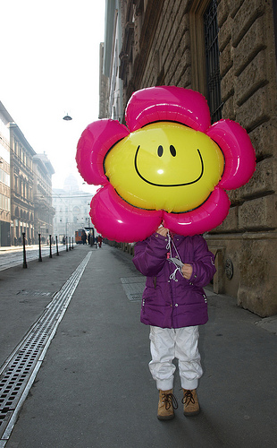
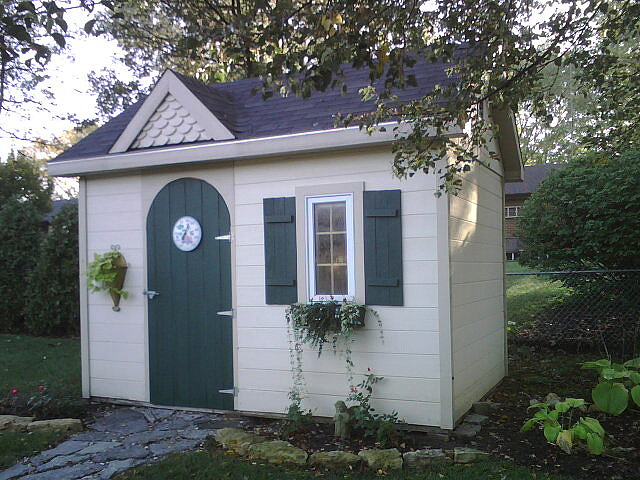
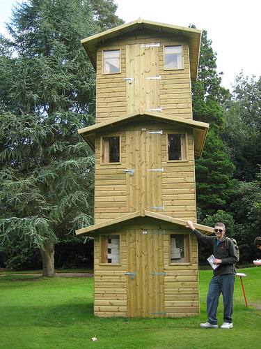

{kind=link}
{kind=link}